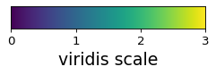
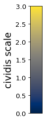

colorschemes¶
Color schemes and gradients.
-
pdb_prot_align.colorschemes.CBBPALETTE= ('#000000', '#E69F00', '#56B4E9', '#009E73', '#F0E442', '#0072B2', '#D55E00', '#CC79A7')¶ color-blind safe palette with black.
From http://bconnelly.net/2013/10/creating-colorblind-friendly-figures
- Type
tuple
-
pdb_prot_align.colorschemes.CBPALETTE= ('#999999', '#E69F00', '#56B4E9', '#009E73', '#F0E442', '#0072B2', '#D55E00', '#CC79A7')¶ color-blind safe palette with gray.
From http://bconnelly.net/2013/10/creating-colorblind-friendly-figures
- Type
tuple
-
class
pdb_prot_align.colorschemes.ValueToColorMap(minvalue, maxvalue, cmap='viridis')[source]¶ Bases:
objectMap numerical values to color gradient.
- Parameters
minvalue (float) – Color map starts at this value.
maxvalue (float) – Color map ends at this value.
cmap (str or matplotlib.colors.Colormap) – Name of matplotlib colormap, or an actual Colormap object. You can also use the wider set of color maps from palettable, such as by providing palettable.sequential.cmocean.Dense_20.mpl_colormap.
-
cmap¶ Color map.
- Type
matplotlib.colors.Colormap
-
minvalue¶ Color map starts at this value.
- Type
float
-
maxvalue¶ Color map ends at this value.
- Type
float
Examples
Make a data frame with some values, and two color maps (one with default ‘viridis’ and another with ‘cividis’) covering value range in data frame:
>>> import pandas as pd >>> from pdb_prot_align.colorschemes import ValueToColorMap >>> >>> df = pd.DataFrame({'value': [0, 1, 2, 1, 3, 0]}) >>> map1 = ValueToColorMap(df['value'].min(), ... df['value'].max()) >>> map2 = ValueToColorMap(df['value'].min(), ... df['value'].max(), ... cmap='cividis')
Map values to colors using
ValueToColorMap.val_to_color():>>> df = (df ... .assign(color=lambda x: x['value'].map(map1.val_to_color), ... color2=lambda x: x['value'].map(map2.val_to_color), ... ) ... ) >>> df value color color2 0 0 #440154 #00224d 1 1 #30678d #575d6d 2 2 #35b778 #a59b73 3 1 #30678d #575d6d 4 3 #fde724 #fde737 5 0 #440154 #00224d
Draw scale bars:
>>> fig1, ax1 = map1.scale_bar(orientation='horizontal', ... label='viridis scale')
>>> fig2, ax2 = map2.scale_bar(orientation='vertical', ... label='cividis scale')
-
scale_bar(*, orientation='vertical', ax=None, label=None, axisfontscale=1, low_high_ticks_only=False)[source]¶ Draw a scale bar for the value-to-color map.
- Parameters
orientation ({'horizontal', 'vertical'}) – Direction that scale bar drawn is drawn.
ax (None or matplotlib.axes.Axes) – If specified, draw scale bar on this axis. Otherwise create new axes.
label (None or str) – Label for scale bar.
axisfontscale (float) – Scale font size by this much.
low_high_ticks_only (bool) – Rather than showing numerical ticks, just indicate low and high.
- Returns
Figure and axis on which the color bar is drawn.
- Return type
(matplotlib.figure.Figure, matplotlib.axes.Axes)
-
val_to_color(values, *, return_color_as='rgb_hex_code')[source]¶ Map numerical values between minvalue and maxvalue to colors.
- Parameters
values (number or array-like of numbers) – Values to map to colors
return_color_as ({'rgb_hex_code', 'rgb_triple'}) – Return color as RGB hex code (e.g., ‘#FF0000’) or triple of numbers (e.g., [255, 0, 0]).
- Returns
Either str or length-3 arrays depending on return_color_as. If values is single value, return single value; otherwise array.
- Return type
single str or length-3 numpy array, or array of them


{kind=link}
{kind=link}
{kind=link}
{kind=link}